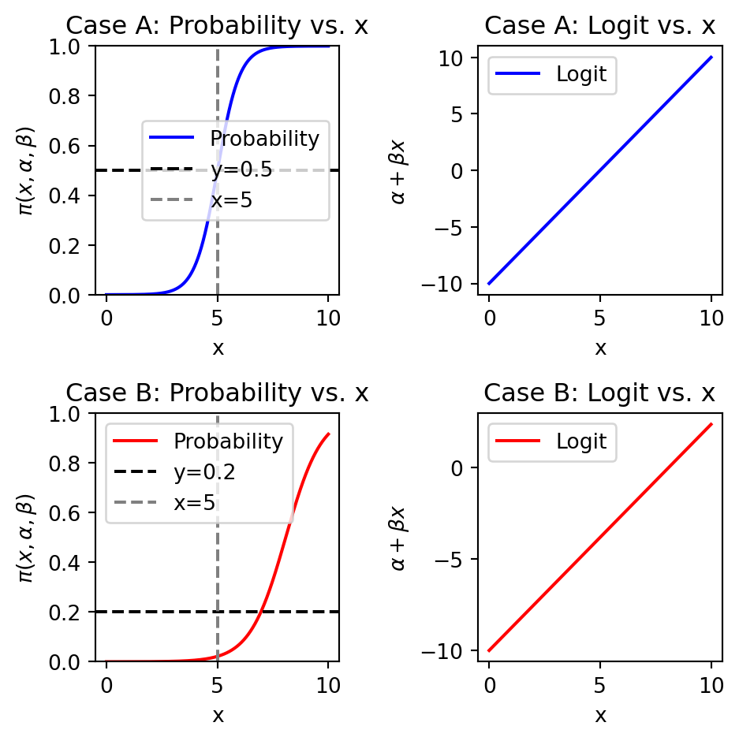
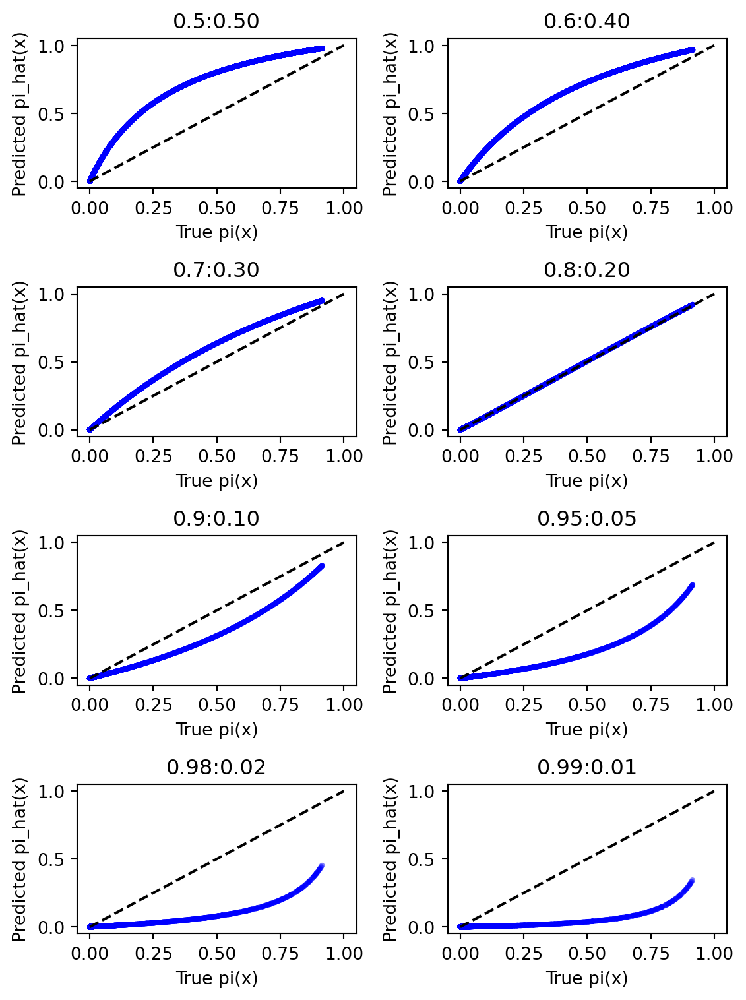

Sampling Bias and Class Imbalance in Maximum-likelihood Logistic Regression
article
Author
Jumbong Junior
Introduction
In this article, the impact of sampling bias (sample dataset distribution different from the population distribution) and class imbalance on logistic regression models is explored. We hypothesize that the predictive performance of a logistic regression model is related to the sampling bias associated with the data and it has a performance advantage when the data is balanced. The hypothesis is testing with two simulated datasets : a balanced dataset (50:50) and an imbalanced dataset (80:20). Each dataset will be sampled to produce samples with the following distribution : 50:50, 60:40, 70:30, 80:20, 90:10, 95:5, 99:1.
The performance of the logistic regression model will be evaluated using the Area Under the Curve (AUC), Area Under the Precision-Recall Curve (AU-PCR), Precision, Recall, and F1-score.
Monte-Carlo simulations will be carried out to evaluate the distribution of the performance metrics for each of the samples and insure the robustness of the results.
This study gives three main results :
A. The predicted probability using a maximum logistic regression (MLLR) model is closest to the true probability when the sample has the same class distribution as the original population. Therefore, in probabilistic modeling with MLLR, it is important to create a sample that matches the class distribution of the original population rather than ensuring equal class sampling, see Figure 3 and Figure 6.
B. AUC measures how well probabilistic classifiers predict. It ranges from 0.5 (random) to 1 (perfect). AUC shows class separability regardless of class imbalance or sampling bias, see Figure 5 and Figure 8.
C. We recommend AUC to evaluate class separability in probabilistic models. To analyse sampling biais as well as the difference in the true and predicted probabilities, AUC-PR, Recall, precision and f1-score can be used as indicator.
The protocol of this paper is as follows. First, we describe how to simulate data. Next, we present the methodology. Finally, we present the results.
1. Simulated Data Generation
Many authors document that, for logistic regression , the probability distribution of the dependent variable is assumed to be Bernoulli and the mass function f is given by :
and where y is the dependent variable, x is the independent variable, \(\alpha\) and \(\beta\) are the parameters to be estimated using the maximum likelihood method (MLE).
For generating the the bernouilli trial y using for a fixed parameter P, we use the following equation :
In order to generate the data, the following steps will be respected : - Generate x the predictor variable from a uniform distribution, which ranges from 0 to 10. - Choose the parameters \(\alpha\) and \(\beta\), which will help to genererate the distribution of the dependent variable y. - Generate the dependent variable y using the logistic function \(p(x, \alpha, \beta)\).
1.1 Numerical Approach to determine parameters \(\alpha\) and \(\beta\) knowing the proportion of y=1.
The numerical approach consists to determine, for a given value of \(\alpha =-10\), the value of \(\beta\) that will allow to have a proportion of y=1 equal to 0.5 in the case of a balanced dataset and 0.2 in the case of an imbalanced dataset.
The optimization problem can be formulated as follows :
Case A : A balanced dataset with 50:50 distribution of y=0 and y=1.
Case B : An imbalanced dataset with 80:20 distribution of y=0 and y=1.
The code below generates the data for the two cases and plots the proportion of y=1 as a function of beta.
The graph Figure 1, both the datasets have a total of 50,000 events, with the Case A dataset having a class distribution of about 50:50 and Case B dataset having a class distribution of about 80:20.
import numpy as npimport matplotlib.pyplot as plt# Inputs : n_events, alpha, beta, random_state# Outputs : x, y, prop_y0, prop_y1# Objective : Simulate data from a logistic model with given alpha, beta.def simulate_case_data(n_events, alpha, beta, random_state=42):""" Simulate data from a logistic model with given alpha, beta. x ~ Uniform(0, 10), y ~ Bernoulli(pi(x)), where pi(x) = exp(alpha + beta*x) / (1 + exp(alpha + beta*x)). Parameters ---------- n_events : int Number of observations (events) to generate. alpha : float Intercept (alpha) for the logistic function. beta : float Slope (beta) for the logistic function. random_state : int Seed for reproducibility. Returns ------- x : np.ndarray of shape (n_events,) Predictor values sampled from Uniform(0,10). y : np.ndarray of shape (n_events,) Binary outcomes (0 or 1) from Bernoulli trials. prop_y0 : float Proportion of y==0 in the dataset. prop_y1 : float Proportion of y==1 in the dataset. """ np.random.seed(random_state)# 1) Draw x from Uniform(0,10) x = np.random.uniform(0, 10, size=n_events)# 2) Compute pi(x, alpha, beta) logit = alpha + beta*x pi = np.exp(logit) / (1.0+ np.exp(logit))# 3) Generate y via Bernoulli(pi) dummy = np.random.rand(n_events) y = (dummy < pi).astype(int)# 4) Calculate proportions of 0 and 1 prop_y0 = np.mean(y ==0) prop_y1 = np.mean(y ==1)return x, y, prop_y0, prop_y1# ---------------- Example usage ----------------# Case A: alpha=-10, beta=2 --> expected ~50:50 distributionxA, yA, p0_A, p1_A = simulate_case_data( n_events=50000, alpha=-10, beta=2, random_state=42)# Case B: alpha=-10, beta=3.85 --> expected ~80:20 distributionxB, yB, p0_B, p1_B = simulate_case_data( n_events=50000, alpha=-10, beta=beta_opt, random_state=42)# Verify proportions# Suppose p0_A, p1_A, p0_B, p1_B are already defined# e.g., p0_A = 0.50; p1_A = 0.50; p0_B = 0.80; p1_B = 0.20fig, axes = plt.subplots(1, 2, figsize=(5, 3)) # 1 ligne, 2 colonnescolors = ['royalblue', 'darkorange'] # Couleurs distinctes pour y=0 et y=1# -------- LEFT SUBPLOT: Case A -----------ax1 = axes[0]bar_container_A = ax1.bar(['y=0', 'y=1'], [p0_A, p1_A], color=colors)ax1.set_title('Case A')ax1.set_xlabel('Classe')ax1.set_ylabel('Proportion')ax1.set_ylim([0, 1]) # Echelle de 0 à 1ax1.bar_label(bar_container_A, fmt='%.2f')# -------- RIGHT SUBPLOT: Case B -----------ax2 = axes[1]bar_container_B = ax2.bar(['y=0', 'y=1'], [p0_B, p1_B], color=colors)ax2.set_title('Case B')ax2.set_xlabel('Classe')ax2.set_ylabel('Proportion')ax2.set_ylim([0, 1])ax2.bar_label(bar_container_B, fmt='%.2f')plt.tight_layout()plt.show()
Figure 1: Simulated data from logistic model with alpha=-10, beta=2 and alpha=-10, beta=beta_opt
The theoretical properties of the simulated datasets are presented in Figure 2. The left subplot shows the probability of y=1 as a function of x for Case A and Case B. The right subplot shows the logit function as a function of x for Case A and Case B. The logit function is given by \(\alpha + \beta x\).
import numpy as npimport matplotlib.pyplot as pltdef logistic(x, alpha, beta):return np.exp(alpha + beta*x) / (1.0+ np.exp(alpha + beta*x))x_values = np.linspace(0, 10, 50000)# Case Aalpha_A, beta_A =-10, 2pi_A = logistic(x_values, alpha_A, beta_A)logit_A = alpha_A + beta_A * x_values# Case Balpha_B, beta_B =-10, beta_optpi_B = logistic(x_values, alpha_B, beta_B)logit_B = alpha_B + beta_B * x_valuesfig, axes = plt.subplots(2, 2, figsize=(5, 5)) # Taille un peu plus grande# (a) Probability vs. x for Case Aaxes[0, 0].plot(x_values, pi_A, color='b', label='Probability')axes[0, 0].set_title('Case A: Probability vs. x')axes[0, 0].set_xlabel('x')axes[0, 0].set_ylabel(r'$\pi(x,\alpha,\beta)$')axes[0, 0].axhline(y=0.5, color='k', linestyle='--', label='y=0.5')axes[0, 0].axvline(x=5, color='gray', linestyle='--', label='x=5')axes[0, 0].set_ylim([0,1]) # Probabilité entre 0 et 1axes[0, 0].legend(loc='best')# (b) Logit vs. x for Case Aaxes[0, 1].plot(x_values, logit_A, color='b', label='Logit')axes[0, 1].set_title('Case A: Logit vs. x')axes[0, 1].set_xlabel('x')axes[0, 1].set_ylabel(r'$\alpha + \beta x$')axes[0, 1].legend(loc='best')# (c) Probability vs. x for Case Baxes[1, 0].plot(x_values, pi_B, color='r', label='Probability')axes[1, 0].set_title('Case B: Probability vs. x')axes[1, 0].set_xlabel('x')axes[1, 0].set_ylabel(r'$\pi(x,\alpha,\beta)$')axes[1, 0].axhline(y=0.2, color='k', linestyle='--', label='y=0.2')axes[1, 0].axvline(x=5, color='gray', linestyle='--', label='x=5')axes[1, 0].set_ylim([0,1])axes[1, 0].legend(loc='best')# (d) Logit vs. x for Case Baxes[1, 1].plot(x_values, logit_B, color='r', label='Logit')axes[1, 1].set_title('Case B: Logit vs. x')axes[1, 1].set_xlabel('x')axes[1, 1].set_ylabel(r'$\alpha + \beta x$')axes[1, 1].legend(loc='best')plt.tight_layout()plt.show()

Figure 2: Logit vs. x for Case A and Case B
Methodology
To test the hypothesis that sampling bias controls the optimal class balance required for the best predictive performance of maximum-likelihood logistic regression, samples will be drawn from the two datasets (Case A and Case B) with varying class distributions. The class distributions will be as follows: 50:50, 60:40, 70:30, 80:20, 90:10, 95:5, and 99:1, respectively.
For each each class sample distribution, 1000 monte-carlo simulations will be carried out and for each simulation the maximum-likelihood logistic regression model will be fitted. The predictive performance of the model will be evaluated using AUC(Area Under the Curve), AU-PCR(Area Under the Precision-Recall Curve), Precision, Recall, F1-score. Those metrics are computed from elements of the confusion matrix : True Positive (TP), False Positive (FP), True Negative (TN), False Negative (FN). The confusion matrix is the matrix with the observed in columns and the predicted in rows.
Results
Case A : Balanced Dataset
The Case A dataset has a balanced class distribution of 50:50. This will be the true distribution of the dataset. Eight random samples will be extracted from the Case A population with varying class distributions of 50:50, 60:40, 70:30, 80:20, 90:10, 95:5, and 99:1. A sample with a class distributiion of 60:40 from the Case A is referred as \(A_{60:40}\). The sample size for each of the eight samples is determined by fixing the lenght of the majority class (class 0) at 5000. In order word, for the \(A_{60:40}\) sample, the number of observations in class 0 is 5000 and the number of observations in class 1 is :
\[
\text{Number of observations in class 1} = \frac{40}{60} \times 5000 = 3333
\]
Eight sub-samples generated from Case A.
The code below generates the eight sub-samples from the Case A dataset with varying class distributions.
def create_subsample_fixed_majority( X, y, fraction_class0=0.6, # e.g., 0.6 => 60:40 majority_class0_size=5000, random_state=42):""" Extract a subsample where the number of class-0 = majority_class0_size, and overall fraction of class-0 is fraction_class0. Returns X_sub, y_sub. """ np.random.seed(random_state)# Indices of class 0 and 1 in the population idx_0 = np.where(y ==0)[0] idx_1 = np.where(y ==1)[0]# We fix #class0 = 5000 n0 = majority_class0_size# fraction_class0 = n0 / (n0 + n1) => n1 = n0 * (1 - p)/p p = fraction_class0 n1 =int(round(n0 * (1- p) / p)) chosen_0 = np.random.choice(idx_0, size=n0, replace=False) chosen_1 = np.random.choice(idx_1, size=n1, replace=False) chosen_indices = np.concatenate([chosen_0, chosen_1]) np.random.shuffle(chosen_indices)return X[chosen_indices], y[chosen_indices]
The code below gives examples of generating the eight sub-samples from the Case A dataset with varying class distributions. Figure 3 shows the distribution of the dependent variable y for each of the eight sub-samples.
# Module : Generation# Inputs : fraction_class0 = [0.5, 0.6, 0.7, 0.8, 0.9, 0.95, 0.99], create_subsample_fixed_majority.# Ourputs : A dictionnarie with keys in fraction_class0 and values a tuple (X_sub, y_sub).fractions_class0 = [0.50, 0.60, 0.70, 0.80, 0.90, 0.95, 0.98, 0.99]samples_A = {}for frac0 in fractions_class0: X_sub, y_sub = create_subsample_fixed_majority( xA, yA, fraction_class0=frac0, majority_class0_size=5000, random_state=42 )# Store or process each sample samples_A[frac0] = (X_sub, y_sub)ffig, axes = plt.subplots(4, 2, figsize=(6, 8))axes = axes.ravel() # on a maintenant 8 sous-graphiques# 1) Déterminer la fréquence max pour fixer une échelle cohérenteall_counts = [np.bincount(y_sub) for _, (_, y_sub) in samples_A.items()]global_max_count =max(counts.max() for counts in all_counts)for i, (label, (X_sub, y_sub)) inenumerate(samples_A.items()): ax = axes[i]# 2) Histogramme sur 2 bins => classes 0 et 1 ax.hist(y_sub, bins=[-0.5, 0.5, 1.5], # histogramme "catégoriel" color='steelblue', edgecolor='black', alpha=0.7)# 3) Titre + proportion de y=1 mean_y = np.mean(y_sub) ax.set_title(f"{label}:{mean_y:.2f}", fontsize=9)# 4) Ajuster l’axe X pour forcer l’affichage (0,1) ax.set_xticks([0, 1]) ax.set_xticklabels(['0', '1'], fontsize=8)# 5) Limiter l’axe Y pour comparer visuellement entre les sous-figures ax.set_ylim(0, global_max_count)# 6) N’afficher “Frequency” que sur la première colonne# pour éviter la répétitionif i %2==0: ax.set_ylabel('Frequency', fontsize=9)else: ax.set_ylabel('')# 7) Ajouter un label X plus discret ax.set_xlabel('y', fontsize=9)# 8) Afficher le count exact sur chacune des barres counts = np.bincount(y_sub)for j, c inenumerate(counts): ax.text(j, c +0.5, str(c), ha='center', va='bottom', fontsize=8)plt.tight_layout()plt.show()
Figure 3: Distribution of y for Case A sub-samples
A maximum-likelihood logistic regression model will be fitted to each of the eight sub-samples. A plot of the true \(p(x)\) versus the estimated \(p(x)\) is presented in Figure 4.
import numpy as npimport pandas as pd import matplotlib.pyplot as pltimport statsmodels.api as sm# Inputs : samples_A, fractions_class0# Outputs : fig# For illustration, let's create a 2 x 4 grid to show all eight ratio-samplesfig, axes = plt.subplots(nrows=4, ncols=2, figsize=(6,8))axes = axes.ravel() # flatten into 1D array [ax0, ax1, ..., ax7]# Hardcode alpha=-10, beta=2 for "true" logistic in Case AALPHA_TRUE =-10BETA_TRUE =2for i, (label, (X_sub, y_sub)) inenumerate(samples_A.items()): ax = axes[i]# 1) Put the data into a DataFrame for convenience df_sub = pd.DataFrame({'X': X_sub, # predictor'y': y_sub # binary outcome })# 2) Add a constant column for the intercept in statsmodels df_sub = sm.add_constant(df_sub, has_constant='add') # Now df_sub has columns ['const', 'X', 'y']# 3) Fit the logistic model model = sm.Logit(df_sub['y'], df_sub[['const', 'X']]) results = model.fit(disp=False) # disp=False to suppress output# 4) Predict the fitted probability df_sub['pi_pred'] = results.predict(df_sub[['const', 'X']])# 5) Compute the "true" pi for comparison df_sub['pi_true'] = logistic(df_sub['X'].values, alpha=ALPHA_TRUE, beta=BETA_TRUE)# 6) Plot pi_true vs. pi_pred ax.scatter(df_sub['pi_true'], df_sub['pi_pred'], alpha=0.3, s=10, color='blue', edgecolors='none')# Add a diagonal line for reference ax.plot([0, 1], [0, 1], color='black', linestyle='--')# 7) Decorate the subplot ax.set_xlabel("True pi(x)") ax.set_ylabel("Predicted pi_hat(x)") ax.set_title(f"{label}:{1-label:.2f}") # e.g., "Case A60:40"plt.tight_layout()plt.show()
Figure 4: True vs. estimated p(x) for Case A sub-samples
Figure 4 shows that the sample (Case \(A_{50:50}\)) with no class imbalance and sampling bias has the best fit between the true and estimated probabilities. As the class imbalance increases from 60:40 to 99:1, the fit between the true and estimated probabilities deteriorates. To have more confidence in the results, the distribution of the performance metrics for each of the eight sub-samples using monte-carlo simulations will be carried out.
Distribution of the performance metrics for the eight sub-samples from Case A with monte-carlo simulations.
We perform 1000 monte-carlo simulations for each of the eight sub-samples from Case A. For each simulation, we fit a maximum-likelihood logistic regression model and compute the performance metrics : AUC, AU-PCR, Precision, Recall, F1-score. In order words, in the end of this exercise, we will have 1000 values for each of the performance metrics for each of the eight sub-samples.
The code below gives the distribution of the performance metrics for each of the eight sub-samples from Case A with monte-carlo simulations.
from sklearn.metrics import ( roc_auc_score, precision_score, recall_score, f1_score, average_precision_score)def evaluate_model_performance(y_true, y_proba, threshold=0.5):""" Given true labels and predicted probabilities, compute AUC, AU-PRC, Precision, Recall, and F1 at a chosen threshold. """# 1) AUC (ROC) auc = roc_auc_score(y_true, y_proba)# 2) AU-PRC (average precision) auprc = average_precision_score(y_true, y_proba)# 3) Convert probas -> hard predictions y_pred = (y_proba >= threshold).astype(int)# 4) Precision, Recall, F1 prec = precision_score(y_true, y_pred, zero_division=0) rec = recall_score(y_true, y_pred, zero_division=0) f1 = f1_score(y_true, y_pred, zero_division=0)return auc, auprc, prec, rec, f1from sklearn.model_selection import train_test_splitMC_RUNS =1000SAMPLE_SIZE =5000# e.g., majority class size if using a fixed majority approachratios = [0.50, 0.60, 0.70, 0.80, 0.90, 0.95, 0.98, 0.99]results_list = []#for r, (X_sub, y_sub) in samples_A.items():for r in ratios:for mc_i inrange(MC_RUNS):# 2) Split the subsample into train/test# stratify ensures class distribution is preserved X_sub, y_sub = create_subsample_fixed_majority( xA, yA, fraction_class0=r, majority_class0_size=SAMPLE_SIZE, random_state=None ) X_train, X_test, y_train, y_test = train_test_split( X_sub, y_sub, test_size=0.3, random_state=42, stratify=y_sub )# Prepare DataFrame for the training set df_train = pd.DataFrame({'X': X_train, 'y': y_train}) df_train = sm.add_constant(df_train, prepend=True, has_constant='add') # => columns: ['const', 'X', 'y']# 3) Fit logistic regression on the TRAIN portion logit_model = sm.Logit(df_train['y'], df_train[['const', 'X']]) result = logit_model.fit(disp=False)# 4) Predict probabilities on the TEST portion df_test = pd.DataFrame({'X': X_test}) df_test = sm.add_constant(df_test, prepend=True, has_constant='add') y_proba_test = result.predict(df_test[['const', 'X']])# 5) Evaluate performance metrics on the TEST set auc, auprc, prec, rec, f1 = evaluate_model_performance(y_test, y_proba_test, threshold=0.5)# 6) Store results results_list.append({'ratio_0': r,'auc': auc,'auprc': auprc,'precision': prec,'recall': rec,'f1': f1 })# Convert collected results to a DataFramedf_results_A = pd.DataFrame(results_list)# Compute the mean performance metrics for each ratiodf_results_A.groupby('ratio_0').mean()
auc
auprc
precision
recall
f1
ratio_0
0.50
0.984082
0.984669
0.930641
0.930979
0.930783
0.60
0.984122
0.978174
0.924246
0.908146
0.916079
0.70
0.983972
0.968164
0.914901
0.882000
0.898063
0.80
0.984141
0.952157
0.903439
0.842323
0.871622
0.90
0.984098
0.916591
0.897012
0.777216
0.832299
0.95
0.984102
0.871136
0.885726
0.710380
0.787117
0.98
0.984290
0.799221
0.866131
0.618839
0.717647
0.99
0.983755
0.737946
0.863657
0.552467
0.663418
The mean of the performance metrics for each of the eight sub-samples from Case A is presented in Figure 5.
# Module : Plotting# Inputs : df_results_A# Outputs : fig showing the performance metrics vs the ratios# Objective : Group data by ratio_0 and plot the performance metrics.import seaborn as snsimport matplotlib.pyplot as pltdf_grouped_A = df_results_A.groupby('ratio_0').mean().reset_index()metrics = ['auc', 'auprc', 'precision', 'recall', 'f1']colours = ['blue', 'orange', 'green', 'red', 'purple']plt.figure(figsize=(6, 5))for metric, colour inzip(metrics, colours): plt.plot(df_grouped_A['ratio_0'], df_grouped_A[metric], label=metric, color=colour, marker='o')# Improve readability with grid and stylingplt.xlabel("Rate of Y = 0", fontsize=12, weight='bold')plt.ylabel("Mean of Performance Metrics", fontsize=12, weight='bold')plt.title("Mean of Performance Metrics vs Ratios", fontsize=14, weight='bold')plt.xticks(fontsize=10)plt.yticks(fontsize=10)plt.grid(False)plt.legend(title="Metrics", fontsize=10, title_fontsize=12, loc="best")plt.tight_layout()plt.show()
Figure 5: Performance metrics Vs. Ratios for Case A
As the class imbalance and sampling bias increase, the performance metrics deteriorate except for the AUC metric. It seems that the AUC metric is not sensitive to class imbalance and sampling bias.
Case B : Imbalanced Dataset
The Case B dataset has an imbalanced class distribution of 80:20. This will be the true distribution of the dataset. Eight random samples will be extracted from the Case B population with varying class distributions of 50:50, 60:40, 70:30, 80:20, 90:10, 95:5, and 99:1.
Eight sub-samples generated from Case B.
The code below generates the eight sub-samples from the Case B dataset with varying class distributions. Figure 6 shows the distribution of the dependent variable y for each of the eight sub-samples.
# Module : Generation# Inputs : fraction_class0 = [0.5, 0.6, 0.7, 0.8, 0.9, 0.95, 0.99], create_subsample_fixed_majority.# Ourputs : A dictionnarie with keys in fraction_class0 and values a tuple (X_sub, y_sub).fractions_class0 = [0.50, 0.60, 0.70, 0.80, 0.90, 0.95, 0.98, 0.99]samples_B = {}for frac0 in fractions_class0: X_sub, y_sub = create_subsample_fixed_majority( xB, yB, fraction_class0=frac0, majority_class0_size=5000, random_state=42 )# Store or process each sample samples_B[frac0] = (X_sub, y_sub)fig, axes = plt.subplots(4, 2, figsize=(6, 8))axes = axes.ravel() # on a maintenant 8 sous-graphiques# 1) Déterminer la fréquence max pour fixer une échelle cohérenteall_counts = [np.bincount(y_sub) for _, (_, y_sub) in samples_B.items()]global_max_count =max(counts.max() for counts in all_counts)for i, (label, (X_sub, y_sub)) inenumerate(samples_B.items()): ax = axes[i]# 2) Histogramme sur 2 bins => classes 0 et 1 ax.hist(y_sub, bins=[-0.5, 0.5, 1.5], # histogramme "catégoriel" color='steelblue', edgecolor='black', alpha=0.7)# 3) Titre + proportion de y=1 mean_y = np.mean(y_sub) ax.set_title(f"{label}:{mean_y:.2f}", fontsize=9)# 4) Ajuster l’axe X pour forcer l’affichage (0,1) ax.set_xticks([0, 1]) ax.set_xticklabels(['0', '1'], fontsize=8)# 5) Limiter l’axe Y pour comparer visuellement entre les sous-figures ax.set_ylim(0, global_max_count)# 6) N’afficher “Frequency” que sur la première colonne# pour éviter la répétitionif i %2==0: ax.set_ylabel('Frequency', fontsize=9)else: ax.set_ylabel('')# 7) Ajouter un label X plus discret ax.set_xlabel('y', fontsize=9)# 8) Afficher le count exact sur chacune des barres counts = np.bincount(y_sub)for j, c inenumerate(counts): ax.text(j, c +0.5, str(c), ha='center', va='bottom', fontsize=8)plt.tight_layout()plt.show()
Figure 6: Distribution of y for Case B sub-samples
A maximum-likelihood logistic regression model will be fitted to each of the eight sub-samples. A plot of the true \(p(x)\) versus the estimated \(p(x)\) is presented in Figure 7.
import numpy as npimport pandas as pd import matplotlib.pyplot as pltimport statsmodels.api as sm# Inputs : samples_B, fractions_class0# Outputs : fig# For illustration, let's create a 2 x 4 grid to show all eight ratio-samplesfig, axes = plt.subplots(nrows=4, ncols=2, figsize=(6,8))axes = axes.ravel() # flatten into 1D array [ax0, ax1, ..., ax7]# Hardcode alpha=-10, beta=2 for "true" logistic in Case AALPHA_TRUE =-10BETA_TRUE = beta_optprint(BETA_TRUE)for i, (label, (X_sub, y_sub)) inenumerate(samples_B.items()): ax = axes[i]# 1) Put the data into a DataFrame for convenience df_sub = pd.DataFrame({'X': X_sub, # predictor'y': y_sub # binary outcome })# 2) Add a constant column for the intercept in statsmodels df_sub = sm.add_constant(df_sub, has_constant='add') # Now df_sub has columns ['const', 'X', 'y']# 3) Fit the logistic model model = sm.Logit(df_sub['y'], df_sub[['const', 'X']]) results = model.fit(disp=False) # disp=False to suppress output# 4) Predict the fitted probability df_sub['pi_pred'] = results.predict(df_sub[['const', 'X']])# 5) Compute the "true" pi for comparison df_sub['pi_true'] = logistic(df_sub['X'].values, alpha=ALPHA_TRUE, beta=BETA_TRUE)# 6) Plot pi_true vs. pi_pred ax.scatter(df_sub['pi_true'], df_sub['pi_pred'], alpha=0.3, s=10, color='blue', edgecolors='none')# Add a diagonal line for reference ax.plot([0, 1], [0, 1], color='black', linestyle='--')# 7) Decorate the subplot ax.set_xlabel("True pi(x)") ax.set_ylabel("Predicted pi_hat(x)") ax.set_title(f"{label}:{1-label:.2f}") # e.g., "Case A60:40"plt.tight_layout()plt.show()
[1.23775]

Figure 7: True vs. estimated p(x) for Case B sub-samples
Here, it is evident from Figure 7 that the sample (Case \(B_{50:50}\)) with balance class no longer has the best fit between the true and estimated probabilities.
The sample (Case \(B_{80:20}\)) that performs the best does not have the sampling bias because it that case, the class distribution of the sample (80:20) is equal to the class distribution of the population (80:20). Furthermore, as the sample bias increases, the maximum-likelihood logistic regression model’s highly under- or overpredicts the probability.
When the distribution of the minority in the sample is less than the distribution of the minority in the population, the model underpredicts the probability. Conversely, when the distribution of the minority in the sample is greater than the distribution of the minority in the population, the model overpredicts the probability.
Distribution of the performance metrics for the eight sub-samples from Case B with monte-carlo simulations.
We perform 1000 monte-carlo simulations for each of the eight sub-samples from Case B. For each simulation, we fit a maximum-likelihood logistic regression model and compute the performance metrics : AUC, AU-PCR, Precision, Recall, F1-score. In order words, in the end of this exercise, we will have 1000 values for each of the performance metrics for each of the eight sub-samples.
The code below gives the distribution of the performance metrics for each of the eight sub-samples from Case B with monte-carlo simulations.
C_RUNS =1000SAMPLE_SIZE =5000# e.g., majority class size if using a fixed majority approachratios = [0.50, 0.60, 0.70, 0.80, 0.90, 0.95, 0.98, 0.99]results_list = []#for r, (X_sub, y_sub) in samples_B.items():for r in ratios:# 1) Create a random subsample# Use None or vary random_state so each iteration is uniquefor mc_i inrange(MC_RUNS): X_sub, y_sub = create_subsample_fixed_majority( xB, yB, fraction_class0=r, majority_class0_size=SAMPLE_SIZE, random_state=None )# 2) Split the subsample into train/test# stratify ensures class distribution is preserved X_train, X_test, y_train, y_test = train_test_split( X_sub, y_sub, test_size=0.3, random_state=42, stratify=y_sub )# Prepare DataFrame for the training set df_train = pd.DataFrame({'X': X_train, 'y': y_train}) df_train = sm.add_constant(df_train, prepend=True, has_constant='add') # => columns: ['const', 'X', 'y']# 3) Fit logistic regression on the TRAIN portion logit_model = sm.Logit(df_train['y'], df_train[['const', 'X']]) result = logit_model.fit(disp=False)# 4) Predict probabilities on the TEST portion df_test = pd.DataFrame({'X': X_test}) df_test = sm.add_constant(df_test, prepend=True, has_constant='add') y_proba_test = result.predict(df_test[['const', 'X']])# 5) Evaluate performance metrics on the TEST set auc, auprc, prec, rec, f1 = evaluate_model_performance(y_test, y_proba_test, threshold=0.5)# 6) Store results results_list.append({'ratio_0': r,'auc': auc,'auprc': auprc,'precision': prec,'recall': rec,'f1': f1 })# Convert collected results to a DataFramedf_results_B = pd.DataFrame(results_list)# Compute the mean performance metrics for each ratiodf_results_B.groupby('ratio_0').mean()
auc
auprc
precision
recall
f1
ratio_0
0.50
0.946381
0.933513
0.857843
0.911224
0.883693
0.60
0.945966
0.904535
0.826579
0.870215
0.847776
0.70
0.946137
0.863102
0.791813
0.812588
0.801942
0.80
0.946245
0.794082
0.751109
0.724216
0.737141
0.90
0.945992
0.652381
0.672349
0.527701
0.590304
0.95
0.946195
0.499444
0.613992
0.301671
0.400875
0.98
0.946513
0.319746
0.114888
0.014935
0.025306
0.99
0.946483
0.218801
0.000000
0.000000
0.000000
The mean of the performance metrics for each of the eight sub-samples from Case B is presented in Figure 8.
# Module : Plotting# Inputs : df_results_B# Objective : Group data by ratio_0 and plot the performance metrics.import seaborn as snsimport matplotlib.pyplot as pltdf_grouped_B = df_results_B.groupby('ratio_0').mean().reset_index()plt.figure(figsize=(6, 6))for metric, colour inzip(metrics, colours): plt.plot(df_grouped_B['ratio_0'], df_grouped_B[metric], label=metric, color=colour, marker='o')# Improve readability with grid and styling# Add vertical lines at 0.8.plt.axvline(x=0.8, color='black', linestyle='--', linewidth=1.0)plt.xlabel("Ratio of Y=0", fontsize=12, weight='bold')plt.ylabel("Mean of Performance Metrics", fontsize=12, weight='bold')plt.title("Mean of Performance Metrics vs Ratios", fontsize=14, weight='bold')plt.xticks(fontsize=10)plt.yticks(fontsize=10)#plt.grid(False, which='both', linestyle='--', linewidth=0.5, alpha=0.7)plt.legend(title="Metrics", fontsize=10, title_fontsize=12, loc="best")plt.tight_layout()plt.show()
Figure 8: Performance metrics Vs. Ratios for Case B
When the distribution of the minority in the sample is less than the distribution of the minority in the population, the performance metrics deteriorate considerably; when the distribution of the minority in the sample is greater than the distribution of the minority in the population, the performance metrics improve. Similar to Case A, there is not a significant change in the AUC metric values due to class imbalance and sampling bias.
Next, it can be interesting to compare the performance measures from the samples that have the best performance in Case A (Case \(A_{50:50}\)) and Case B (Case \(B_{80:20}\)). In case, the sample \(A_{50:50}\) that performs the best has no sampling bias and class imbalance, while the sample \(B_{80:20}\) that performs the best has no sampling bias but has class imbalance. From these comparisons, it can be concluded that the performance of maximum-likelihood logistic regression is more sensitive to sampling bias than class imbalance.